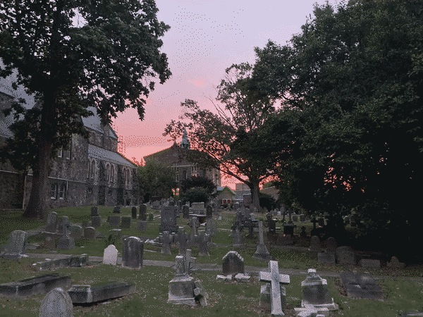

Last updated: Sun Oct 01 2023 | Permalink | RSS
Sunset over a local church and graveyard
I have some updates from the past week and a content schedule for the next month!
Firstly I am honored that last Monday I was named one of Technical.ly's RealLIST Engineers of Philadephia for 2023! It always feels nice to be recognized for work and this is the first professional recognition I've received since transitioning into tech. I am especially honored that my work with Code for Philly was specifically mentioned because I am incredibly proud of the work that I've done there over the past three years.
Speaking of Code for Philly, my second update this week is that I am stepping up to join Code for Philly's leadership team as the Operations Lead. Over the next few months I will be learning more about the different projects we facilitate, who the players are (that I don't already know), and what needs and strengths each project team has. I will also be supporting the teams' operational needs like making sure teams have the tools they need to thrive. I have loved volunteering on the PLSE Expungement team for the past three years and will continue to support them as team lead until a new lead is fully in place.
My final update from the week is that I have put in some work on updates to my personal website and portfolio! I have made the home page a little less scattered so that now it only shows my most recent projects, blogs, and pixel art pieces. There is also a separate about page so that it is easier to link to. The biggest change is that the projects, blogs, and pixel art all have their own pages. Each of the pages shows a list of the content and when clicked on, shows a detailed view with the ability to navigate to previous and next posts.
This change felt relevant to my interest in writing blogs, doing streams, and making more pixel art. The thought was "If I will be making more content, it should be easier to look at content on my portfolio." Granted this has been an upgrade to my website I have been wanting to do for a long time. But of course, priorities for a long time were elsewhere and finally I was able to make those changes. There's always more to do but I'm pleased with this update and excited to post more and find need for things like pagination and a more robust database than a JSON file.
Speaking of content: I made a content schedule for myself for the next month! I am still figuring out a good way to do streams from my refurbished early-2015 MacBook Pro, so those will not be announced yet, but I will be sure to post them when they are officially scheduled. For now what I can say is that they will be Mondays from 7-9pm Eastern Time. The blogs though are certainly ready to be sheduled! In the month of October, I will be publishing:
- October 8: Minesweeper Tutorial (this is a big post)
- October 15: Money, Tech, & Motivation
- October 22: Code Should Be Smaller
- October 28: Monthly updates and next schedule (similar to this post)
The titles and topics may change, like everything in life, really. And once streaming is figured out I will add that to the schedule as well. But, like always, the best way to keep up with this blog is to subscribe to this blog's RSS feed and to my subscribe to my YouTube channel where I'll be streaming (once I figure out the tech for it). You're also welcome to join the test streams as they pop up.